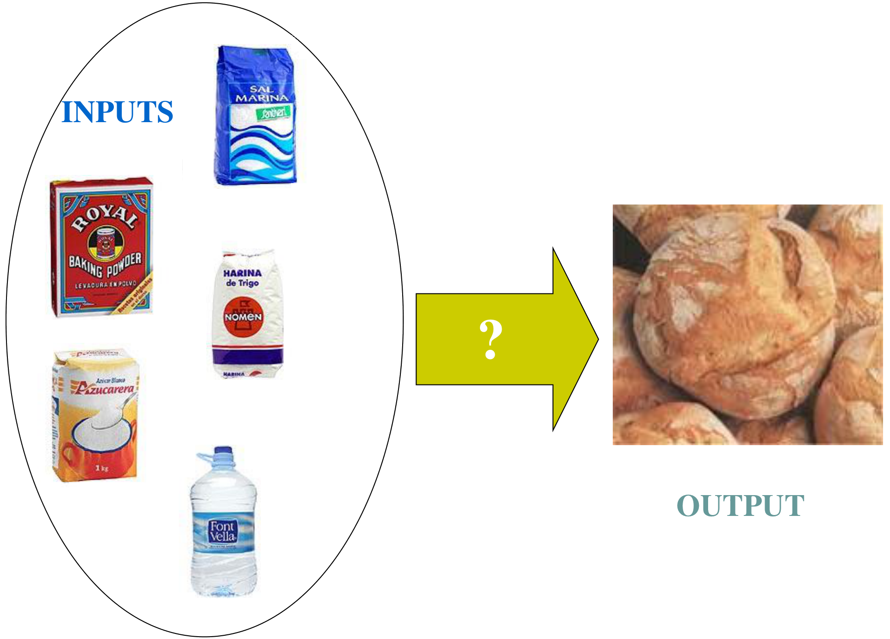
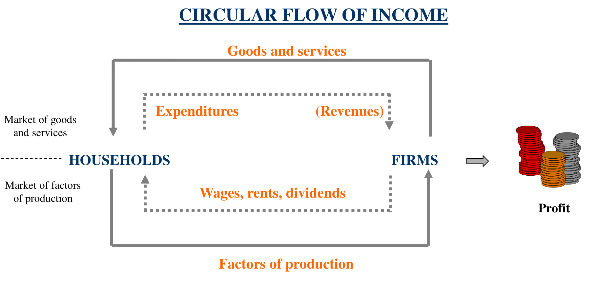
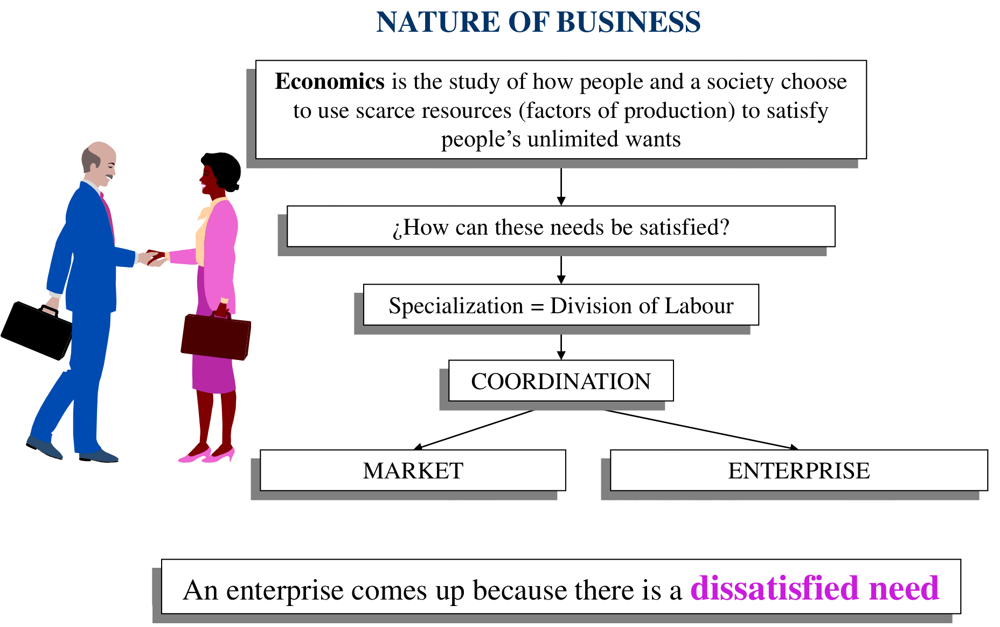
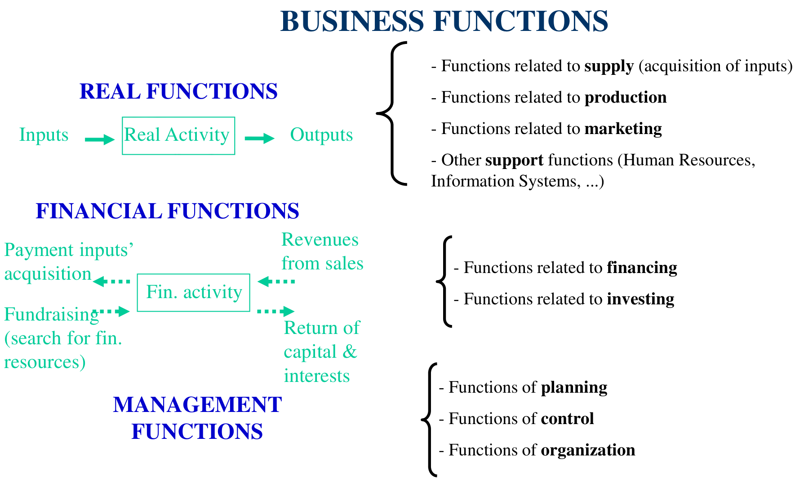
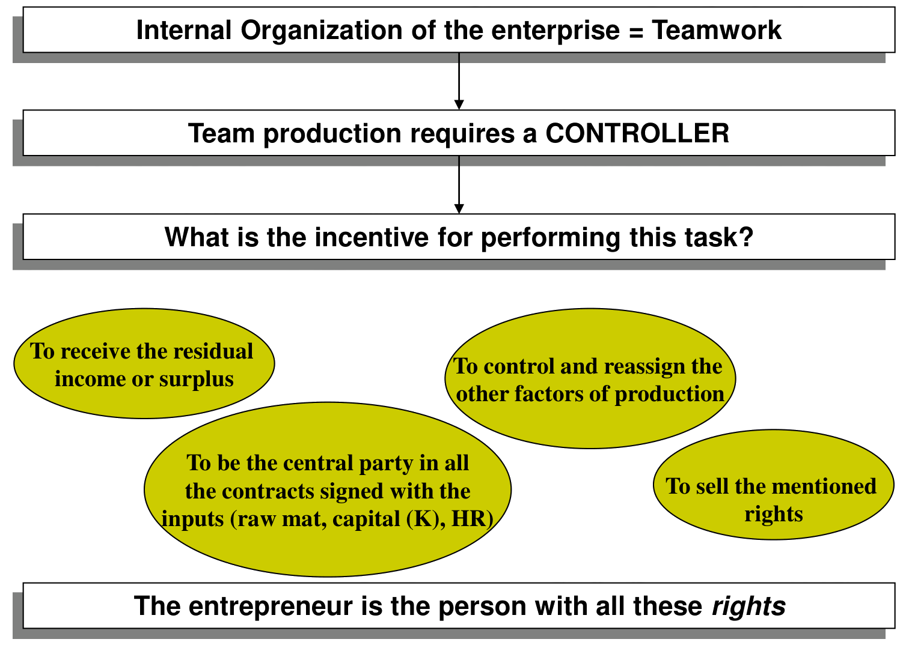
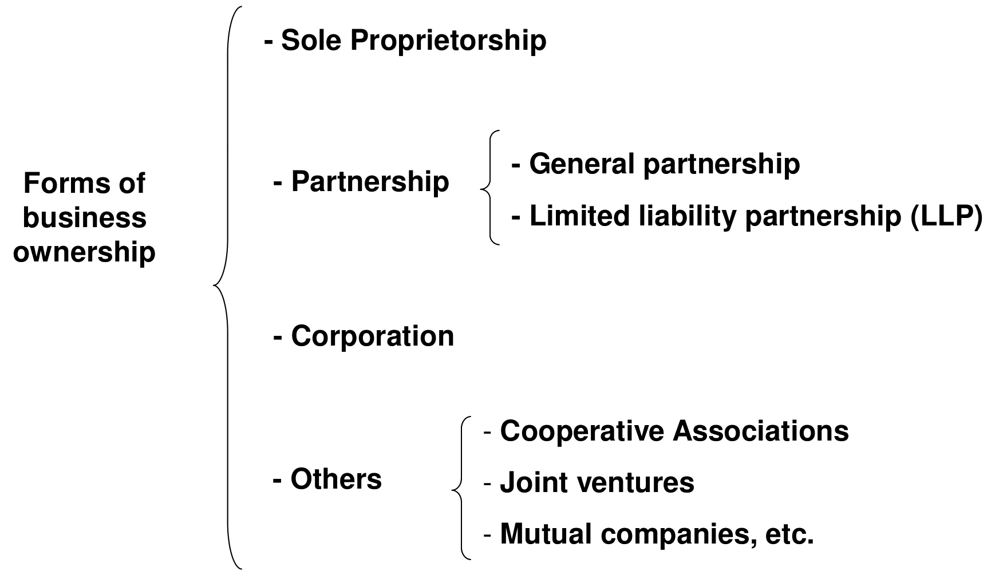
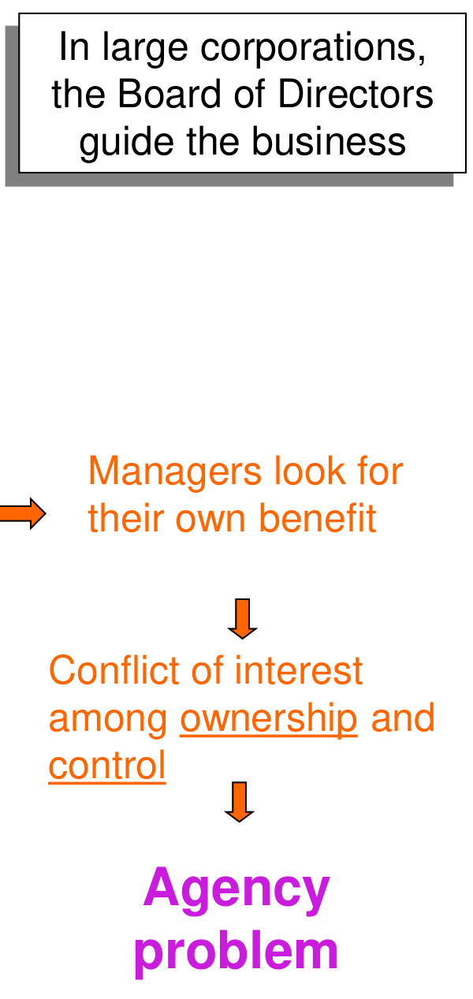
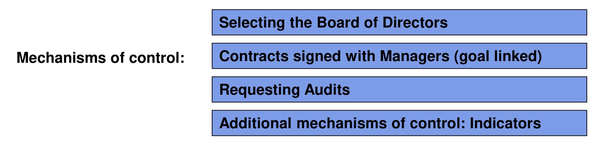

The Firm: Types and Objectives
What a business is, the circular flow of income, business functions and the management process, the entrepreneur, and the legal forms of business ownership with the agency problem.
Central idea: a business transforms inputs into the goods and services that people need. Firms and households are tied together by a circular flow of goods, factors and money. Inside the firm, real, financial and management functions are coordinated by an entrepreneur, the person who holds the rights over the residual income. The law offers several forms of ownership, and in large corporations the separation between owners and managers gives rise to the agency problem.
The topic covers six points [Slide 2]: the concept and nature of business, the functional areas of a business, the management process, the role of engineers in business management, the enterprise and the entrepreneur, and the types of companies and their legal forms.
§ 1 What a business is [Slides 3-4]
A business is an economic activity that transforms a set of inputs, the factors of production, into outputs: goods and services aimed at satisfying customers' needs and wants.
| Inputs (factors of production) | Outputs |
|---|---|
| Land (natural resources) | Goods |
| Labour | Services |
| Capital | |
| Entrepreneurship |
Making bread is a simple case. Salt, baking powder, flour, sugar and water are the inputs and bread is the output, but the ingredients do not become bread by themselves: something has to transform them, and that transformation is precisely the business activity.

§ 2 The circular flow of income [Slides 5-11]
The circular flow of income is a simple economic model of the reciprocal circulation of income between producers and consumers. The markets of goods and services and the markets of factors interact continuously and create a double flow, real and monetary; through it, the economy of a country decides what to produce, how, and for whom [Slide 5].
Two economic agents take part [Slide 6]:
- Households play a double role [Slide 7]: they own the factors of production (land, labour, capital, technology and know-how) and they are the fundamental units of consumption.
- Firms use the factors supplied by households to produce the goods and services that households demand [Slide 8].
The exchange between them takes place in two markets:
- In the factor markets, such as the labour market and the stock-exchange market, households deliver inputs to firms and receive incomes in return: wages, rents and dividends [Slide 9].
- In the market of goods and services, firms sell what they produce to households and collect the money that households spend [Slide 10].
Every exchange therefore has two sides [Slide 11]. Real flows are the goods, services and factors themselves; financial flows are their monetary compensation, which runs in the opposite direction. What the firm keeps after paying for the factors is its profit.

§ 3 The nature of business: market and enterprise [Slide 12]
Economics studies how people and societies choose to use scarce resources (the factors of production) to satisfy unlimited wants. These wants are met through specialization, that is, the division of labour. Specialization in turn requires coordination, and coordination can be carried out in two ways: by the market or by the enterprise. An enterprise appears because there is a dissatisfied need.

§ 4 Business functional areas [Slide 13]
The functions of a business fall into three groups:
- Real functions turn inputs into outputs through the real activity: functions related to supply (acquisition of inputs), to production and to marketing, plus support functions such as Human Resources or Information Systems.
- Financial functions run alongside the real cycle. The firm raises funds (searches for financial resources), pays for the acquisition of inputs, receives revenues from sales, and returns capital and interests to those who provided the funds. They include the functions related to financing and to investing.
- Management functions: planning, organization and control.

§ 5 The management process [Slide 14]
Managing consists of four activities, as formulated by Henri Fayol (1841-1925), which are repeated as a cycle around one common aim, achieving the organization's stated purpose:
| Stage | Content |
|---|---|
| Planning | Defining goals, establishing strategy and developing subplans to coordinate activities |
| Organizing | Determining what needs to be done, how it will be done and who is to do it |
| Leading | Directing and motivating all involved parties and resolving conflicts |
| Controlling | Monitoring activities to ensure that they are accomplished as planned |
§ 6 The role of engineers in business management [Slide 15]
Engineers bring to management:
- effective project planning, time management and problem solving;
- attention to detail;
- experience in data processing;
- computer skills and technical knowledge.
§ 7 The enterprise and the entrepreneur [Slides 16-18]
7.1 Definitions
An entrepreneur is a risk taker who starts and operates a business in the hope of making a profit. Entrepreneurship is the process of bringing land, labour and capital together and taking the risk involved in producing a good or service in the hope of making a profit [Slide 16].
There is no conclusive agreement on who the entrepreneur is or on his or her role in the enterprise. The duties are especially unclear in big companies, where owners, management directors and moneylenders each seem to share some of the characteristics attributed to a single person, the entrepreneur [Slide 16].
7.2 Four views of the entrepreneur [Slide 17]
| The entrepreneur as... | Author |
|---|---|
| Coordinator | |
| Risk taker | Knight, 1921 |
| Innovator | Schumpeter, 1950 |
| "On alert" | Kirzner, 1973 |
Putting the four views together, the functions of the entrepreneur are to coordinate and control the productive process, ensure the payment of the factors of production, take risky decisions, innovate, and detect new business opportunities.
7.3 The entrepreneur as the holder of rights [Slide 18]
The internal organization of an enterprise is teamwork, and team production requires a controller. The incentive to take on that task comes from four rights:
- to receive the residual income or surplus;
- to control and reassign the other factors of production;
- to be the central party in all the contracts signed with the inputs (raw materials, capital, human resources);
- to sell these rights.
The entrepreneur is the person who holds all these rights.

§ 8 Types of enterprises: classification criteria [Slide 19]
| Criterion | Classes |
|---|---|
| Economic: sector | Primary, secondary, tertiary |
| Economic: size | Big, medium, small |
| Economic: scope of the business | One market or multi-market; national or multinational |
| Legal: ownership of the factors of production | Private companies; state-owned companies |
| Legal: main forms of business ownership | Sole proprietorship; partnership; corporation |
§ 9 Forms of business ownership [Slide 20]
The forms of ownership are the sole proprietorship, the partnership (general partnership or limited liability partnership, LLP), the corporation, and other forms such as cooperative associations, joint ventures and mutual companies.

§ 10 The sole proprietorship [Slide 21]
A sole proprietorship is a business owned by one person, who assumes all the risk, takes the decisions and looks for business opportunities, and therefore owns all the rights.
| Advantages | Disadvantages |
|---|---|
| Simple to start | Unlimited financial liability |
| The proprietor owns all the profits | Hard to raise funds for expansion |
| Personal satisfaction (being your own boss) | Often no one to share management responsibilities (one person's talents and skills) |
| Sole decision maker | Impermanence |
| No tax on the business as distinct from the owner | |
| Easy to dissolve |
§ 11 The partnership [Slides 22-23]
A partnership is an association of two or more persons who carry on a business for profit as co-owners. It is formed through a partnership agreement, a written contract between the owners that identifies the business and sets out the partners' rights and duties: name, location, type of business, sharing of profits, dissolution of the partnership, and so on [Slide 22].
| Advantages | Disadvantages |
|---|---|
| Few restrictions on starting | Unlimited and joint financial liability |
| Pooling of funds, talents and borrowing power | Potential for personal disagreements |
| More chance to specialize than in a sole proprietorship | Relative impermanence |
| No tax on the business as distinct from the owners | Frozen investment |
§ 12 The corporation [Slide 24]
A corporation is a legally chartered organization that is a separate legal entity from its owners and has most of the rights of a person.
| Advantages | Disadvantages |
|---|---|
| Separate legal entity (the shareholders are the owners) | Special and double taxation |
| Limited financial liability of the owners | Complex and costly to form and to dissolve |
| Permanence (it can exist forever) | Government regulation and public disclosure requirements |
| Easy transfer of ownership (shares) | |
| Greater financial capability |
The three main forms side by side
| Feature | Sole proprietorship | Partnership | Corporation |
|---|---|---|---|
| Owners | One person | Two or more co-owners | Shareholders |
| Liability | Unlimited | Unlimited and joint | Limited |
| Taxation | No tax on the business as distinct from the owner | No tax on the business as distinct from the owners | Special and double taxation |
| Permanence | Impermanent | Relatively impermanent | Permanent |
| Funds | Hard to raise | Pooled | Greater financial capability |
| Starting and ending | Simple to start, easy to dissolve | Few restrictions on starting | Complex and costly |
§ 13 Separation of ownership and control: the agency problem [Slides 25-26]
In large corporations the Board of Directors guides the business, and the company is run by managers: professional employees who take decisions and assume risks. This separates ownership (the shareholders) from control (the managers) and creates a problem [Slide 25]:
- managers may look for their own benefit, and the shareholders do not control the way they act;
- managers may take decisions in their own interest, disregarding the effect on shareholders;
- shareholders and managers have different access to information and different objectives;
- shareholders have neither enough information to assess the managers' performance nor incentives to do so, or to improve the management of the business.
The result is a conflict of interest between ownership and control: the agency problem.
The solution is for shareholders to be able to control the way managers act, so that they do not pursue their own benefit [Slide 26]. The mechanisms of control are:
- selecting the Board of Directors;
- contracts signed with managers, linked to goals;
- requesting audits;
- as an additional mechanism, indicators.
Increasingly, the shareholders who own large blocks of shares are the ones taking the decisions.


§ 14 The cooperative [Slides 27-28]
A cooperative association is an incorporated organization whose user-members, who are also its owners, get back any revenue left after expenses are paid [Slide 27]. It follows five principles:
- Membership is open.
- It is owned and democratically controlled by its members.
- Economic benefits are distributed in proportion to each member's level of participation in the cooperative.
- It is based on the values of self-help, self-responsibility, democracy and equality.
- Its members believe in the ethical values of honesty, openness, social responsibility and caring for others.
Common types of cooperative [Slide 28]:
- Employee credit unions accept savings deposits from members, who own shares in the co-op, and lend to members: savers receive interest and borrowers pay it.
- Agricultural co-ops help member farmers market their products.
- Buying co-ops help members buy products at lower prices.
- Consumer co-ops run customer-owned retail facilities: consumers form a buying pool to obtain quantity discounts and to replace wholesalers and retailers.
§ 15 Other forms of business ownership [Slide 29]
- In a limited partnership, one or more of the partners, but not all of them, are liable for the firm's debts only up to the amount they have invested in it.
- A joint venture is a special type of partnership set up by individuals or firms to accomplish a specific task or project. It is very important and common in international business.